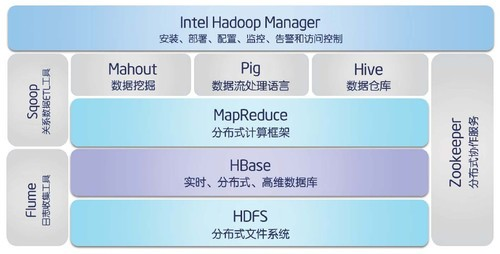
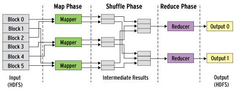

Hadoop
Table of Contents
1 Hadoop
- 一个基于 Java 的分布式存储计算框架；
- 存储：HDFS（Hadoop Distributed File System）；
- 计算：MapReduce 计算框架；

数据流
- 使用 UNIX 标准流，作为程序与 Hadoop 之间的接口；
- 任何语言只要可以从标准输入输出流中读写数据，就可以编写 MapReduce 函数；
2 HDFS
简单一致性模型，对文件实行一次写入、多次读取的访问模式。
| 高数据量 | |
|---|---|
| 高容错 | 设计为部署在廉价硬件上 |
| 高吞吐 | 适用于大数据集应用程序流式数据访问 |
| 高延迟 |
2.1 主从（Master／Slave）结构
Namenode（主节点）
- 管理者；
- 只有一个；
- 管理：
- 文件系统命名空间；
- 文件系统树；
- 所有目录、文件（记录每个文件的每个块所在的节点信息）；
客户端对文件的访问操作；
Datanode（从节点）
- 工作者；
- 有多个；
- 存储、检索数据；
- 定期发送其上存储的信息到
主节点；
2.2 读写
写入
客户端向主节点发起写入文件的请求；主节点根据文件大小和文件块配置情况，返回它管理的从节点的信息；客户端将文件划分为多个块，根据从节点的地址，按顺序将块写入从节点块中；
写入只能在文件末尾添加，不支持在任意位置进行修改，也不支持多个写入者的操作。
读取
客户端向主节点发起读取文件的请求；主节点返回文件存储的从节点的信息；客户端读取文件信息；
2.3 Block（块）
- HDFS 存储空间的单位，默认为 64MB；
- 默认
块的大小远远大于一般文件系统的最小储存单位
这是为了相对于磁盘传输的时间开销，降低寻址的时间开销；
2.4 Chunk（分块）
- 文件被划分成的多个部分；
3 MapReduce
- 一个分布式计算框架，用于大规模数据集的并行运算；
- 通过把操作分发给网络上的每个节点执行来实现；
- 应用：日志分析、数据挖掘；
Map
- 映射，负责将数据打散；
- 可以高度并行，这对高性能要求的应用，以及并行计算领域的需求非常有用；
Reduce
- 归纳，负责对数据进行聚集；
- 可并行性相对较差，主节点会尽量把操作只分配在一个节点上；
- 节点的数量是特殊指定的；
3.1 RDBMS vs MapReduce
| RDBMS（B 树结构） | MapReduce | |
|---|---|---|
| 专长 | 更新一小部分数据时，效率更高 | 更新大部分数据时，效率更高 |
| 数据量级 | GB | TB |
| 数据访问 | 交互式、批处理 | 批处理 |
3.2 执行过程
向框架提交一个计算作业时：
- 数据被分割，并传输到不同的 Map 节点；
- Map 任务执行，产生中间结果；
- 中间结果作为输入，被传输到 Reduce 节点，这一过程（shuffle）涉及数据的拆分和合并；
- Reduce 任务执行，产生处理结果；
- 所有 Reduce 任务的处理结果合并在一起，产生最终结果数据；
